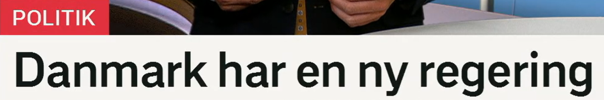
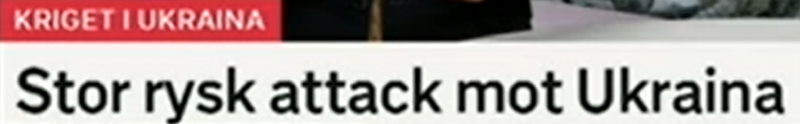
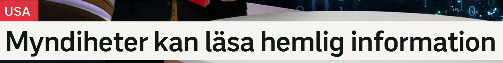
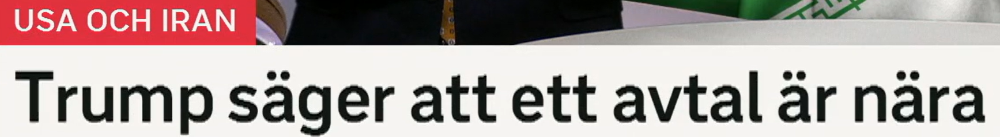
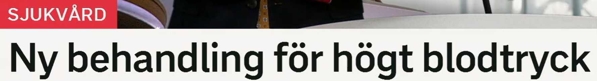

Danmark har en ny regering
丹麦有了新政府。
en regering 政府；定形 regeringen。动词 regera 是执政、统治。
相关词：styre 政权/治理，kabinet 内阁，regeringsparti 执政党，minister 部长。
Den nya regeringen presenterar sin politik. 新政府介绍其政策。
ny 新的；中性 nytt，复数/定形 nya。高频：ny lag 新法律，ny regering 新政府。
Landet får en ny statsminister. 该国将有一位新首相。
ha 有、拥有。新闻标题里 A har B 常表示“出现了/产生了 B”。
Danmark har en ny regering efter valet. 选举后丹麦有了新政府。
政治标题句型
Land har en ny regering = 某国有了新政府。也可说：En ny regering har bildats. 新政府已经组成。

Stor rysk attack mot Ukraina
俄罗斯对乌克兰发动大规模攻击。
en attack 袭击、攻击；mot 表示针对、朝向。整体记：attack mot X 对 X 的攻击。
近义词：angrepp 攻击，anfall 进攻，offensiv 攻势，bombning 轰炸。
Attacken mot staden skedde i natt. 对该城市的袭击发生在夜间。
stor 大的；stort 中性，stora 复数/定形。新闻里 stor attack 可译为大规模攻击。
近义表达：omfattande 大范围的，kraftig 强烈的，massiv 大规模的。
En omfattande attack drabbade flera regioner. 大范围袭击波及多个地区。
rysk 俄罗斯的；Ryssland 俄罗斯，ryska 俄语/俄罗斯女性，en ryss 俄罗斯人。
Ryska styrkor anföll området. 俄罗斯部队攻击了该地区。
冲突报道句型
Stor attack mot X 是非常高频的标题结构；可替换为 angrepp mot、bombning av。

Myndigheter kan läsa hemlig information
政府机关可以读取秘密信息。
en myndighet 政府机关、主管部门。复数 myndigheter 常译“当局、政府部门”。
相关词：myndigheterna 当局，statlig myndighet 国家机关，tillsynsmyndighet 监管机构。
Myndigheterna utreder händelsen. 当局正在调查该事件。
kan 表示能、可以；läsa 可表示阅读，也可表示读取数据。
相关表达：få tillgång till 获得访问权限，komma åt 访问到，granska 审查。
Företaget kan läsa användarnas meddelanden. 公司可以读取用户的信息。
hemlig 秘密的；information 信息。常见：hemliga dokument 秘密文件，känsliga uppgifter 敏感资料。
近义词：konfidentiell 机密的，sekretessbelagd 保密的，känslig 敏感的。
Hemlig information får inte spridas. 秘密信息不得传播。
权限表达
kan läsa information 在数字语境里常是“能读取信息”。更正式可说：har tillgång till information。

Trump säger att ett avtal är nära
特朗普说协议即将达成。
säga att... 表示“说……”。新闻里常用来转述政治人物的话。
近义表达：uppger att 表示/称，hävdar att 声称，meddelar att 宣布。
Ministern säger att läget är allvarligt. 部长说局势严重。
ett avtal 协议、合同。动词搭配：sluta avtal 达成协议，skriva under avtal 签署协议。
近义词：överenskommelse 协议/共识，kontrakt 合同，uppgörelse 协议/安排。
Parterna närmar sig ett avtal. 各方接近达成协议。
nära 近、接近。ett avtal är nära = 协议接近达成。
近义表达：är på gång 正在推进，närmar sig 接近，är inom räckhåll 触手可及。
En lösning är nära. 解决方案快要出现了。
外交标题句型
X säger att ett avtal är nära = X 表示协议即将达成。新闻中 avtal、förhandlingar、uppgörelse 常一起出现。

Ny behandling för högt blodtryck
治疗高血压的新疗法。
en behandling 治疗、处理。动词 behandla 治疗/处理。
近义词：terapi 疗法，vård 医疗护理，medicinering 药物治疗，kur 疗程。
Patienten får ny behandling. 病人接受新治疗。
在医疗语境里 behandling för X = 针对 X 的治疗。
Det finns behandling för sjukdomen. 这种疾病有治疗方法。
blodtryck 血压；högt blodtryck 高血压。反义：lågt blodtryck 低血压。
相关词：hypertoni 高血压，hjärta 心脏，kärl 血管，riskfaktor 风险因素。
Motion kan sänka blodtrycket. 运动可以降低血压。
医疗标题句型
Ny behandling för X = 针对 X 的新疗法。可替换：ny medicin mot X、ny metod för X。
复习表：重点词 + 近义词 + 高频用法
| 关键词 | 近义/相关词 | 高频搭配 |
|---|---|---|
| regering | styre, kabinet, minister, regeringsparti | ny regering, bilda regering, regeringen beslutar |
| attack | angrepp, anfall, offensiv, bombning | attack mot, stor attack, rysk attack |
| myndighet | myndigheterna, statlig myndighet, tillsynsmyndighet | myndigheter kan, myndigheterna utreder |
| hemlig | konfidentiell, sekretessbelagd, känslig | hemlig information, hemliga dokument |
| avtal | överenskommelse, kontrakt, uppgörelse | ett avtal är nära, sluta avtal, skriva under avtal |
| behandling | terapi, vård, medicinering, kur | ny behandling, behandling för, få behandling |
练习 1
说“新政府已经组成”。提示：En ny regering har bildats.
练习 2
把“对城市的大规模攻击”译成瑞典语。提示：stor attack mot staden
练习 3
用 ett avtal är nära 说“协议快达成了”。
练习 4
把“高血压的新疗法”译成瑞典语。提示：ny behandling för högt blodtryck